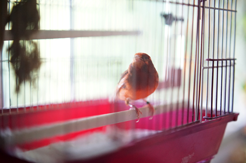
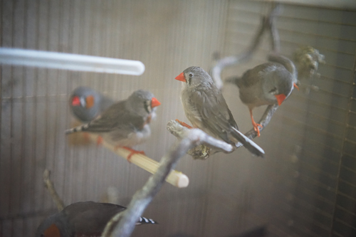
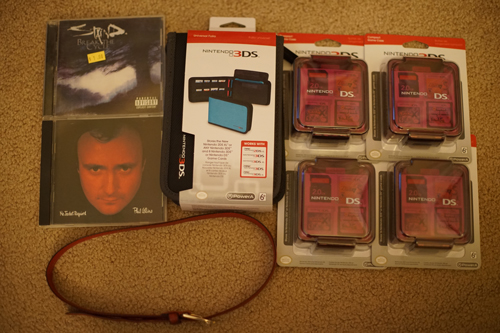

my mom's new canary Fred is so cute!!! he's so jumpy it's hard to get pictures of him! hes also got some serious stagefright and wont sing if anyone is in the room with him but he will start the moment you walk out!
and then theres the little finchies!! i love them they are so cute!! they're jumpy too but not as bad as Fred.
i went back to the thrift store from yesterday since i didnt get to check any of the CDs. i looked through every CD and found a bunch i thought ryan may be interested in but he wasnt interested in any!! its okay i found 2 i want
also went to the consignment shop. had a good time looking around but didnt get anything (success!?)
stopped by the dollar store on the way back and found a bunch of 3DS accessories. ive been looking for these d*nged cart cases forever but wasnt willing to spend $8 on a bunch of bootlegs. dollar tree really came through for me this time!
Glove leather (???) and fits my waist (rare). i was really looking for one of these!
poor ryan is going to have to listen to this from the other room. im very excited to sing this one.
I was thinking about making a ACAB ABACAB joke but I'll keep it to myself. I left "Testify" because i dont know any of the songs on it.
16 carts per case. i have a lot of DS games... Ryan's getting at least one of these if not 2
i slapped the LV strap on my fake hermes and wore it like that today even though the leather doesnt match. i'm not a huge fan of handbags to be honest. id much rather use a backpack or a crossbody bag. i carry too much cr*p around

i had rio sitting out with me for a few days and now liam's been out with me for a while. he's such a good looking boy! i wish i had a good wig for him but its weird to imagine a Ryu with a fiber wig and not mohair...
it's hard to believe this mold is discontinued. it's such a banger!! i guess it had been produced since 2006 though so maybe the casting mold wore out? im glad i have one